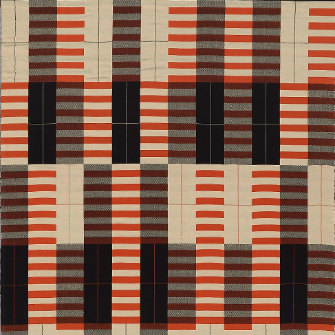
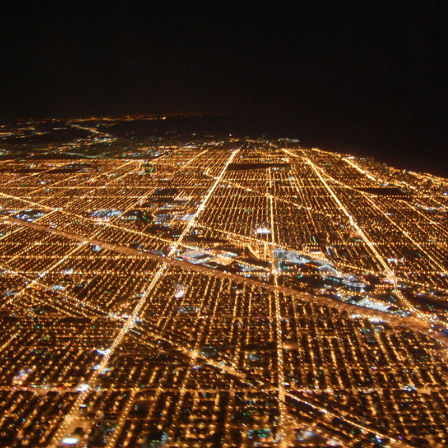

Why Grids?
The grid has served as a foundational structure throughout the history of aesthetic culture. It remains ubiquitous among art, architecture, design, and music that we perceive everyday, along with entrenched ideas that inform how we perceive. The grid is influential because it's a powerful compositional device, but it's also much more: an icon, an interface, and an ideology. The grid does not simply organize units in a matrix, as a material or conceptual system for content, it posits a certain way of comprehending the world.
This page is both a tribute to, and tribunal on, the grid. It is meant to illustrate the pervasive role of grids in our civilization, to argue that this seemingly-neutral form is more complicated than it lets on. This page is also a practical demonstration of CSS Grid, a relatively new layout tool for code, and a creative demonstration of its design potential. Edward Bacal (Summer 2020)
- 
-

-

- 
-

-

[T]he Paleolithic brick of ancient Mesopotamia, the first grid module, is rolled into a slab and stacked to make buildings and cities. These city grids in turn are projected onto the landscape as maps and coordinate systems whose measure suggests the measure of time that is foundational for musical composition. The “looking through” of map projections suggests, by various turns, moveable type and, when peeled up as a screen, the rudiments of Renaissance space and photography and the evolution of the Newtonian universe. With the invention of moveable type and modern mechanics, grids could be mass produced, effectively becoming a universal space. This universal space takes the form of the modernist boxes of architecture and painting alike, which then melt away into the ether of the Internet’s World Wide Web." Hannah B Higgins, The Grid Book
Different kinds of grids
The grid is not as uniform as one might think, different applications in different media evidence its formal and material diversity. Not all grids are the same, and not all grids are visual: we hear the grid when we listen to music that's set to standard time-signatures, and we inhabit it when we walk through cities or modern buildings. The grid is also something we can think, as a conceptual structure that organizes intellectual categories (think of Myers-Briggs types, the periodic table, the "political compass", or, more abstractly, the way identity is mapped onto categories). Different grids do different things for different reasons. As the art historian Hannah Higgins explains, grids belong to historical and geographic contexts where their users have different needs and values. The grid, therefore, is far from a standardized, timeless template; rather, it evolves and adapts to its circumstances, building on past iterations to reinvent itself (indeed, CSS Grid is among the latest innovations in this history, iterating the grid in a highly abstract, digital format). The following are only four kinds of grids.
- P A I N T I N G
- S C U L P T U R E
- A R C H I T E C T U R E
- M U S I C
What about Grids?
The grid is at once a symbol of objective, rational order, and a highly constructed, contingent device. On one hand, the grid purports to exist outside nature: in its mathematical precision and formal uniformity, it appeals to a Platonic ideal that precedes worldly matter or subjective representation. The grid is a screen on which to frame reality, neutralizing difference and divergence by subjecting phenomena to a flat, relational structure. The grid, art historian Rosalind Krauss argues On the other hand, this conception of the grid is the product of modern Western thought. The grid is only rational and objective to the extent that reason and objectivity are privileged in a given intellectual paradigm. For all its apparent rigidity, the grid is epistemologically mutable
-
This diagram, by the Italian Renaissance theorist Leon Battista Alberti (1404-1472), demonstrates the foundational theory of linear perspective. Perspective is a technique for analysing and reproducing the spatial organization of the observable world; that is, it models how the world appears from the eye's point of view. In this framework, visible matter traces back to a single, condensed point – the viewer - for whom everything is defined on a linear horizon. This conception of vision (although it forgets that we see things with two eyes) is profoundly influential for optics and Western art. It elaborates a mathematically precise technique for depicting three-dimensional space, and it forwards a philosophical basis for doing so. With linear perspective, artists could make pictures that appear like "a window onto the world," closing the gap between representation and reality. Although the idea that images should accurately reproduce vision may seem natural, it's very historically and culturally specific to modern Western thought. The presumption that art can, or should, reproduce an individual's perspective is based on highly constructed notions of art and human subjectivity. By attempting to illustrate an ostensibly objective model of ostensibly individual vision, Alberti's grid manifests a larger argument about the epistemological basis of perception.
-
This famous print, Albrecht Dürer's Draughtsman Making a Perspective Drawing of a Reclining Woman (ca 1600) depicts a draughtsman translating three-dimensional objects onto a two-dimensional surface. Notice the devices he's using to frame the scene from a fixed point of view, along with the page that's organized into an analogous grid. By using the grid in this way, the draughtsman mirrors his visual perspective onto the page, such that his eye and hand seem to work as one; he thereby replicates the objects he sees along with the methods and technologies through which he sees them.This illustration of vision and representation simultaneously demonstrates the efficacy of linear, grid-based perspective while laying bare the way it's constructed (in this case, literally implemented through tools for seeing). Moreover, this image raises larger questions about vision and subjectivity: who sees whom and how? How do gender and sexuality intersect with vision to determine how we observe bodies? How are these ways of looking naturalized or challenged through the purportedly objective grid?
last p